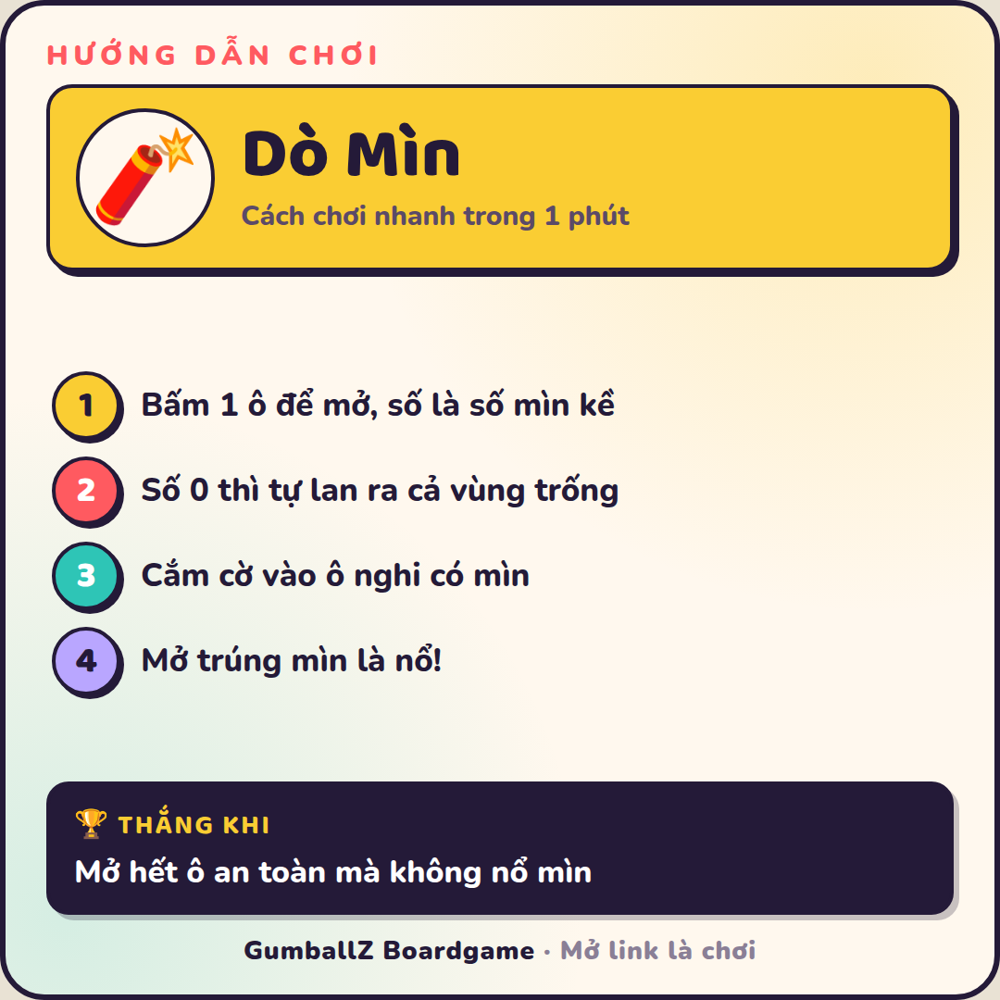

Dò Mìn là trò kinh điển: bãi mìn giấu 10–99 quả mìn dưới các ô. Bấm 1 ô để mở — số hiện ra cho biết có bao nhiêu quả mìn ở 8 ô xung quanh ô đó. Mở trúng mìn là nổ! Mở hết tất cả ô an toàn là thắng.
1. Mở ô và số
- Bấm chuột trái (hoặc chạm) vào 1 ô để mở. Số 1–8 hiện ra = số mìn kề ô đó.
- Số 0 (ô trống) thì tự lan ra cả vùng trống xung quanh + viền số — mở 1 ô có thể mở được cả chục ô.
- Cú bấm đầu tiên luôn an toàn — mìn chỉ được đặt sau cú bấm đó, nên cứ bấm thoải mái.
- Bấm trúng mìn 💥 là thua ván (chơi đơn thì ván kết thúc, đua thì bạn bị loại khỏi cuộc đua).
2. Cắm cờ 🚩
- Bấm chuột phải vào 1 ô để cắm / nhổ cờ. Trên điện thoại: bật nút 🚩 Cắm cờ rồi chạm vào ô, hoặc nhấn giữ ô khoảng nửa giây.
- Cờ chỉ để đánh dấu mìn bạn nghi ngờ — ô đang cắm cờ thì không mở được, phải nhổ cờ trước.
- Số 💣 còn lại trên đầu bãi = tổng số mìn trừ số cờ đã cắm — cắm đủ số cờ thì số đó về 0.
3. Độ khó
- Dễ: bãi 9×9, 10 quả mìn — làm quen, thư giãn.
- Vừa: bãi 16×16, 40 quả mìn — vừa sức mỗi ngày.
- Khó: bãi 16×30, 99 quả mìn — chỉ dành cho cao thủ, cần suy luận chắc tay.
4. Chế độ chơi
- 💣 Chơi đơn: một mình dò 1 bãi mìn, tính giờ — kỷ lục tốt nhất của từng độ khó lưu trên máy bạn. Thắng thì +10 xu, chơi 1 ván +2 xu.
- 🤖 Đua với máy: cùng 1 bãi mìn với máy — ai mở hết ô an toàn trước thì thắng. Máy Dễ mở bừa nhiều, Máy Khó suy luận theo số. Bạn nổ mìn thì bị loại.
- 🌐 Đua online: tạo phòng, gửi mã 5 ký tự cho 1–3 người bạn vào đua cùng 1 bãi mìn — thanh tiến độ hiện từng người đã mở được bao nhiêu ô, ai mở hết trước thì thắng (hòa thì ai xong trước thắng). Người nổ mìn bị loại, còn lại đua tiếp.
5. Mẹo chơi
- Số 1 ở góc: ô số 1 chỉ có 3 ô kề — dễ suy ra mìn ở đâu nhất, mở từ góc ra.
- 1-2-1: dãy số 1-2-1 dọc biên thì 2 ô kề số 2 ở 2 đầu là mìn — cắm cờ luôn không cần nghĩ.
- Số bằng số ô chưa mở: ô số 3 mà chỉ còn đúng 3 ô kề chưa mở thì cả 3 đều là mìn — cắm cờ hết.
- Số trừ cờ bằng 0: ô số 2 đã có 2 cờ kề thì các ô kề còn lại đều an toàn — mở hết.
- Đừng đoán mò khi chưa cần: bãi nào cũng có đường suy luận chắc ăn — đoán mò chỉ khi hết nước chắc.